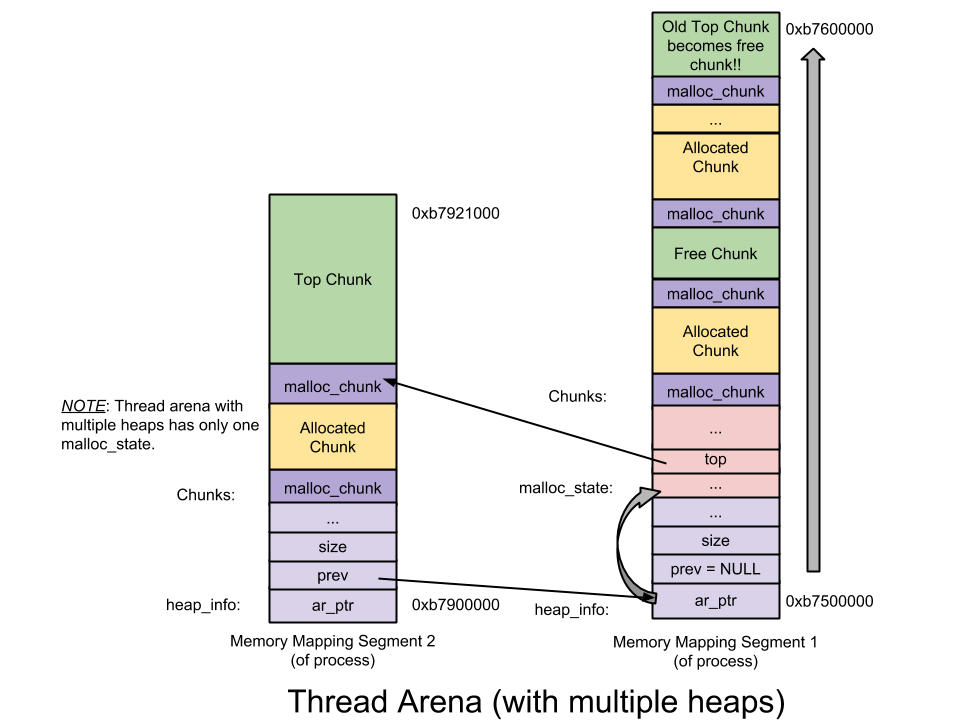

Understand Glibc Malloc
Contents
序言
我经常对堆内存感到疑惑，以下问题
堆内存是如何从内核取得的？
如何高效管理堆内存？
堆是由谁来管理的？是内核，库，还是程序本身？
堆能够被利用吗？
经常盘旋在我的脑海中，然而直到最近我才有时间去深入理解这些问题。下面就来谈谈我的研究成果。
开源社区提供了许多现成的内存分配器：
- dlmalloc – General purpose allocator
- ptmalloc2 – glibc
- jemalloc – FreeBSD and Firefox
- tcmalloc – Google
- libumem – Solaris
- …
每种内存分配器都宣称自己快速、高效、可扩展，但并不是所有内存分配器都能够适用于所有应用程序。内存吞吐量大的应用程序的性能很大程度上取决于内存分配器的性能。在这篇文章中，我只会讨论glibc malloc内存分配器。为了更好地理解glibc malloc，在此给出源码链接。所以系好安全带，我们要开始了！
|
|
关于malloc
系统调用
这篇文章中的malloc所使用的系统调用是sbrk或者mmap。
线程
在早年的Linux中，dlmalloc是默认的内存分配器。由于对多线程的支持，ptmalloc2取代了dlmalloc的地位。多线程支持能提高内存分配器的性能，从而提高应用的性能。
在dlmalloc中，当有两个线程同时调用malloc时，只有一个线程能够访问临界区，因为freelist被所有可用线程共享。正如此，使用 dlmalloc的多线程应用会在内存分配上耗费过多时间，导致整个应用性能的下降。
而在ptmalloc2中，当有两个线程同时调用malloc时，内存均会得到立即分配，因为每个线程都维护着一个独立里堆段，因此维护这些堆的freelist也是独立的。这种为每个线程独立地维护堆和freelist的行为就称为per thread arena。
freelist : 已被free的chunk构成的链表
example
|
|
输出分析
从下面的输出里我们可以得知，这里还没有堆段和per thread stack，因为thread1还没有创建。
|
|
主线程执行malloc之后
从输出中我们可以看到堆段产生在数据段0804b000 - 0806c000之间，这表明堆内存是通过更高级别的系统调用产生（即brk系统调用）的。此外，请注意，尽管用户只申请了1000字节的内存，但是实际产生了132KB的堆内存。这个连续的堆内存区域被称为 arena。因为这个arena是被主线程建立的，因此称为main arena。接下来的申请会继续分配这个arena的132KB中剩余的部分，直到用尽。当用尽时，它可以通过更高级别的系统调用扩容，在扩容之后，top chunk的大小也随之调整以圈进这块额外的空间。相应地，arena也可以在top chunk空间过大时缩小。
注意：top chunk是一个arena中最顶层的chunk。有关top chunk的更多信息详见下述“top chunk”部分。
|
|
在主线程 free 之后
在如下的输出结果中我们可以看出当分配的内存区域free掉时，其后的内存并不会立即释放给操作系统。分配的内存区域（1000B）仅仅是移交给了glibc malloc，把这段free掉的区域添加在了main arenas bin中（在glibc malloc中，freelist被称为bin）。随后当用户请求内存时，glibc malloc就不再从内核中申请新的堆区了，而是尝试在bin中找到空闲区块，除非实在找不到。
|
|
thread1执行malloc之前
此时thread1的堆还未建立，但是其每个线程栈都已建立。
|
|
thread1执行malloc 后
thread1的堆段建立在内存映射段区域b7500000 - b7521000，这表明了堆内存是使用mmap系统调用产生的，而非同主线程一样使用 sbrk系统调用。同样地，尽管用户只请求了1000B，1MB的堆内存还是被映射到了进程地址空间。在这1MB中，只有132KB被设置了读写权限并成为该线程的堆内存。这段连续内存（132KB）被称为thread arena。
注意：当用户请求超过 128KB 大小并且此时arena中没有足够的空间来满足用户的请求时，内存将通过使用 mmap 系统调用（不再是 sbrk）来分配而不论请求是发自main arena还是thread arena。
|
|
thread1 free之后
在如下的输出结果中我们可以看出 free 掉的分配的内存区域这一过程并不会把堆内存归还给操作系统，而是仅仅是移交给了glibc malloc，然后添加在了thread arenas bin中。
|
|
Arena
Arena的数量
在上述例子中，主线程包含main arena而thread 1包含它自有的thread arena。所以若不计线程的数量，在线程和arena之间是否存在一对一映射关系？当然不存在，部分极端的应用甚至运行比处理器核心的数量还多的线程，在这种情况下，每个线程都拥有一个arena开销过高且意义不大。因此，应用的arena数量限制是基于系统的核心数的。
|
|
Multiple Arena
让我们来看一个运行在单核计算机上的32位操作系统上的多线程应用（4线程 = 主线程 + 3个用户线程）的例子。这里线程数量(4)大于核心数的二倍加一，因此在这种条件下，glibc malloc认定multiple arenas会被所有可用线程共享。那么它是如何共享的呢？
- 当主线程第一次调用malloc时，已经建立的main arena会被没有任何竞争地使用。
- 当thread1和thread2第一次调用malloc时，一块新的arena就被创建且会被没有任何竞争地使用。此时线程和arena之间有着一对一的映射关系。
- 当thread3第一次调用malloc时，arena的数量限制被计算出来。这里超过了arena的数量限制，因此尝试复用已经存在的arena。
复用：
一旦遍历出可用arena，就开始自旋申请该arena的锁。
如果上锁成功（比如说main arena上锁成功），就将该arena返回用户。
- 如果查无可用arena，thread3的malloc操作阻塞，直到有可用的arena为止。
- 当thread3第二次调用malloc时，malloc会尝试使用上一次使用的arena（main arena）。当main arena可用时就用，否则thread3就一直阻塞直至main arena被free掉。因此现在main arena实际上是被main thread和thread3所共享
Multiple Heaps
在glibc malloc中主要发现了3种数据结构：
- heap_info ：
Heap Header，一个thread arena可以有多个堆。每个堆都有自己的堆 Header。为什么需要多个堆？ 每个thread arena都只包含一个堆，但是当这个堆段空间耗尽时，新的堆（非连续区域）就会被 mmap 到这个arena。 - malloc_state ：
Arena header，一个thread arena可以有多个堆，但是所有这些堆只存在arena header。arena header包括的信息有：bins、top chunk、last remainder chunk等。 - malloc_chunk ：
Chunk header， 一个堆根据用户请求被分为若干chunk。每个这样的chunk都有自己的chunk header。
注意 ：
- 「Main arena」没有多个堆，因此没有「heap_info」结构。当「main arena」空间耗尽时，就拓展 sbrk 获得的堆段（拓展后是连续内存区域），直至“碰”到内存映射区为止。
- 不像「thread arena」，「main arena」的「arena 」header不是 sbrk 获得的堆段的一部分，而是一个全局变量，因此它可以在 libc.so 的 数据段中被找到。
main arena和thread arena的图示如下（单堆段）：
thread arena的图示如下（多堆段）：

Chunk
chunk有以下几种类型:
- Allocated chunk
- Free chunk
- Top chunk
- Last Remainder chunk
Allocated chunk
prev_size: 如果上一个chunk未被分配, 这个值代表上一个chunk的大小, 否则这里就是用户的数据.
size: 该chunk的大小. 最后三位是标志位.
- PREV_INUSE(P) — 当上一个chunk被分配时置1
- IS_MMAPED(M) — 当chunk以mmap调用分配时置1
- NO_MAIN_ARENA(N) — 当chunk属于thread arena时置1
注意:
- 在已分配的malloc_chunk中, fd/bk等字段是无用的, 这些字段被用户数据所取代.
- 用户所请求的大小被转换成有效的大小, 因为需要额外的空间来存储malloc_chunk结构和保持对齐. 由于转换后的大小(8的倍数)能够保证后三位永远为0, 因此这三位被当作标志位使用.
Free chunk

prev_size: 任何两个free chunk都不相邻. 当两个free chunk相邻时, 它们会被合并成一个free chunk. 因此free chunk的上一个chunk总是已分配的, 所以free chunk的prev_size字段总是上一个chunk的数据.
size: 这个字段表示该free chunk的大小.
fd: 前向指针 — 在bin中指向下一个chunk(并不是指在物理内存上连续的下一个chunk).
bk: 后向指针 — 在bin中指向上一个chunk(并不是指在物理内存上连续的上一个chunk).
Top chunk
一个arena中最顶部的chunk叫做top chunk, 它不属于任何bin, 当bins中无可用的free chunk时, top chunk才被使用. 如果top chunk的大小大于用户请求时, top chunk被分为两部分:
User chunk(大小为用户请求的大小)Reminder chunk(剩余大小)
剩余的chunk变成新的top chunk. 如果top chunk的大小小于用户所请求的大小, 系统将会调用sbrk(main arena)或者mmap(thread arena)来扩展top chunk.
Last Reminder chunk
最后一次small request中因分割而得到的剩余部分. last remainder chunk有助于改进引用的局部性, 也即连续的对small chunk的malloc请求可能最终导致各chunk被分配得彼此贴近。
但是除了在一个arena里可用的chunk, 哪些有资格成为last remainder chunk呢？
当一个用户请求small chunk而无法从small bin和unsorted bin得到服务时, binmaps就会扫描下一个最大非空bin. 正如前文所提及的, 如果这样的bin找到了, 其中最适chunk就会分割为两部分: 返回给用户的User chunk和添加到unsorted bin中的Remainder chunk。此外，这一Remainder chunk还会成为最新的last remainder chunk。
那么参考局部性是如何实现的呢？
现在当用户随后的请求是请求一块small chunk并且last remainder chunk是unsorted bin中唯一的chunk, last remainder chunk就分割成两部分: 返回给用户的User chunk、添加到unsorted bin中的Remainder chunk. 此外，这一Remainder chunk还会成为最新的 last remainder chunk. 因此随后的内存分配最终导致各chunk被分配得彼此贴近。
Bins
Bins是freelist的数据结构类型, 它们被用于存放free chunks. 根据大小可将bins分为以下几类:
- Fast bin
- Unsorted bin
- Small bin
- Large bin
存放以上bins的数据结构是:
fastbinsY: 这个数组存放fastbins
bins: 这个数组存放unsorted, small和large bins. 总共有126个bins链表, 他们按照如下规则分布:
- Bin 1 — Unsorted bin
- Bin 2到Bin 63 — Small bin
- Bin 64到Bin 126 — Large bin
Fast bin
大小在16到80字节的chunk被称为fast chunk, 存放fast chunk的bins被称为fast bins . Fast bins在内存分配和释放快于其他bins.
- bins的数量 — 10
- 每个fast bin包含一个free chunks的单向链表, 插入和删除都只发生在链表的前端 — LIFO
- chunk大小 — 相隔8字节
- 在同一个fast bin中的chunk大小相同.
- 第一个fast bin(index 0)的大小为16字节, 往下依次8字节递增.
- 在malloc 初始化中, 最大fast bin大小被置为64字节(非80), 因此16-64字节被默认为fast chunks.
- 不合并 — 两个相邻的fast chunk不被合并, 这样做虽然会造成内存碎片, 但是可以提高速度.
- malloc(fast chunk) —
- 起初fast bin max size和fast bin indices是空的, 因此执行的是fast bin的代码, 而非small bin和large bin的代码.
- 之后当它非空时, 用户请求的chunk从相应的fast bin链表中取出
- free(fast chunk) —
- fast bin index由相应的chunk大小计算得出
- 被free的chunk插入到相应的binlist的前端

Unsorted bin
当small bin或者large bin被free时, 它们会先被插入到unsorted bin链表而非各自相应的链表. 这个规则让glibc malloc能够二次利用之前free的chunk, 这样做能够加快内存的分配和释放, 因为花在查找合适大小chunk上的时间减少了.
- bins的数量 — 1
- unsorted bin包含一个双向循环链表
- chunk 大小 — 对大小无限制

Small bin
低于512字节的chunk被称为small chunk, 存放small chunk的bins被称为small bins, small bins快于large bins但慢于fast bins.
- bins的数量 — 62
- 每个small bin包含一个双向循环链表, 这是为了方便chunk能够从bins中间进行unlink, chunk从链表前端插入并从链表尾端删除 — FIFO
- chunk大小 — 相隔8字节
- 首个small bin(即Bin 2)包含大小为16字节的chunk, 往下依次递增8字节
- 在同一small bin中的chunk大小一致.
- 合并 — 两个相邻的free small chunk会被合并.
- malloc(small chunk) —
- 最初small bin是空的, 当用户请求一个small chunk时, 执行的是unsorted bin的代码而非small bin.
- 同样地, 在第一次调用malloc期间, 在malloc_state找到的small bin和large bin数据结构被初始化, bin都会指向它们本身以表示binlist为空
- 之后当small bin为非空时, (若用户在此调用malloc)相应链表上的最后一个chunk将会被移除, 并且返回给用户
- free(small chunk) —
* 当要free这个chunk时, 先检查它前后(物理内存上毗邻)的chunk是否是free的, 如果是的话, 先将这些chunk从各自的链表上unlink, 合并后将它们插入到unsorted bin链表的头部
Large bin
大小大于512字节的chunk被称为large chunk, 存放large chunk的链表被称为large bin.
bins的数量 — 63
- 每个large bin包含一个双向循环链表, 我们可以在链表的任何地方插入或删除chunk
- 在这63个bin中:
- 前32个bin记录着大小以64字节递增的bin链表, 也即第一个large chunk(Bin 65)记录着大小为512字节~568字节的chunk的binlist, 第二个large chunk (Bin 66)记录着大小为576字节到632字节的chunk的binlist, 依次类推……
- 后16个bin记录着大小以 512 字节递增的bin链表
- 后8个bin记录着大小以 4096 字节递增的bin链表
- 后 4 个bin记录着大小以 32768 字节递增的bin链表
- 后2个bin记录着大小以 262144 字节递增的bin链表
- 最后1个bin记录着大小为剩余大小的chunk
- 与small bin不同的是, large bin中所有chunk大小不一定相同, 因此各chunk需要递减保存. 最大的chunk保存在最前的位置, 而最小的chunk保存在最后的位置
- 合并 — 任意两个free chunk不相邻
- malloc(large chunk) —
- 初始情况下, large bin都是空链表, 因此尽管用户请求large chunk, 执行的代码将是next largetst bin code而不是large bin code
- 同样地, 在第一次调用malloc期间, 在malloc_state找到的small bin和large bin数据结构被初始化, bin都会指向它们本身以表示binlist为空
- 此后当small bin非空后, 当相应binlist中最大chunk的大小大于用户所请求的大小时, binlist就从顶部遍历到底部(从小到大)以找到一个大小最接近用户需求的chunk. 一旦找到, 相应chunk就会分成两块:
User chunk(用户请求大小) — 返回给用户Remainder chunk(剩余大小)— 添加到unsorted bin
- 当相应binlist中最大chunk的大小小于用户所请求的大小时, 尝试在Next largest bin中查到到所需的chunk以响应用户请求. next largetst bin code会扫描
binmaps以找到下一个最大非空bin, 如果这样的bin找到了, 就从其中的binlist中检索到合适的chunk并返回给用户; 反之就使用top chunk以响应用户请求 - free(large chunk) — 类似于small chunk
refrence
这篇文章里有些段落的翻译是参考了别人的翻译(修改了格式), 在这里放上链接: